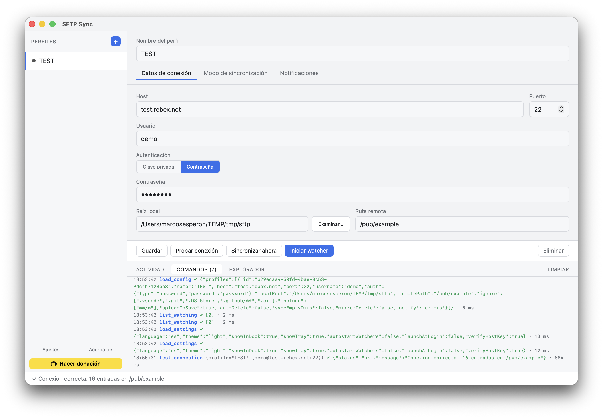
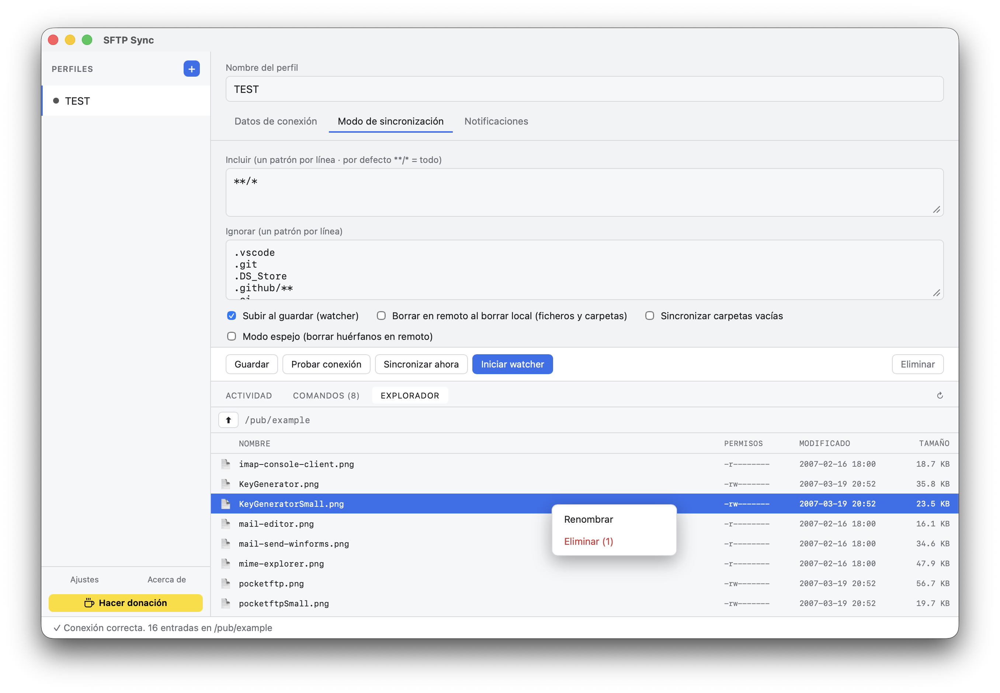
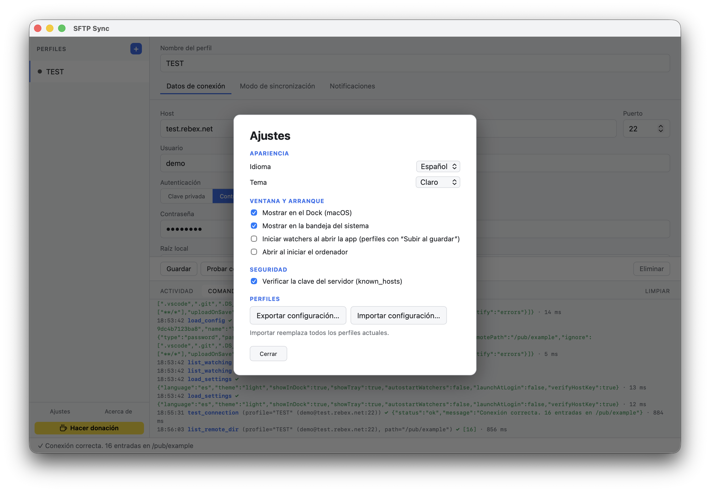
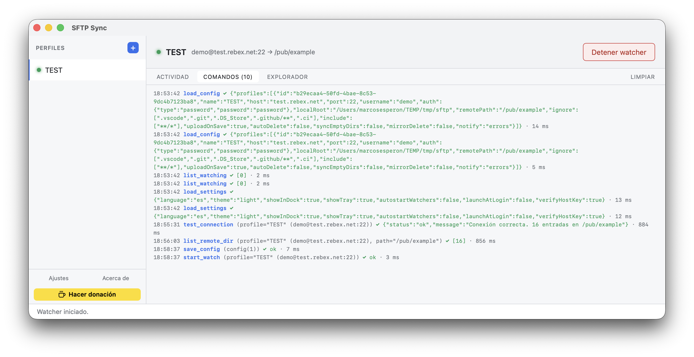

Una app de escritorio que sube tus archivos al guardar, vigila carpetas enteras y gestiona varios servidores. Nativa, ligera e independiente del editor.
Sin telemetría · Binarios de ~5 MB · Licencia MIT
Pensada para desarrollo y despliegues: rápida, configurable y sin depender de ningún editor.
Un watcher vigila tu carpeta y sube los cambios al instante, con agrupado inteligente de los guardados del editor.
Gestiona varios servidores, duplícalos con un clic y exporta/importa tu configuración cuando quieras.
Modelo TOFU con known_hosts propio: confirma la huella la primera vez y avisa si la clave del servidor cambia.
Navega el árbol remoto, renombra y elimina, selecciona en lote y arrastra ficheros locales para subirlos.
Avisos del sistema por perfil: solo errores, resumen por lote o todas las acciones. Tú eliges el ruido.
Cierra la ventana y sigue vigilando desde la bandeja del sistema. Instancia única, sin duplicados.
Claro/oscuro automático según el sistema (o forzado) y multiidioma español / inglés.
Patrones include/ignore, modo espejo, carpetas vacías y borrado propagado.
Autenticación por clave privada (con passphrase) o contraseña, con compatibilidad RSA moderna (rsa-sha2).




Host, usuario y clave o contraseña. Elige la carpeta local y la ruta remota con el selector nativo.
Verifica la clave del servidor una vez. A partir de ahí, todo conecta sin fricción.
Guarda en tu editor y los cambios viajan solos. Ciérrala a la bandeja y olvídate.
"host": "10.10.10.1", "port": 22, "username": "deploy", "localRoot": "~/web/app", "remotePath": "/var/www/", "include": ["**/*"], "ignore": [".git", "node_modules/**"], "uploadOnSave": true, "autoDelete": false // modo espejo opcional
Núcleo en Rust puro (sin dependencias nativas en C), verificación de host key estilo OpenSSH y configuración que vive solo en tu equipo.
Elige tu plataforma. Cada release incluye los instaladores para todos los sistemas.